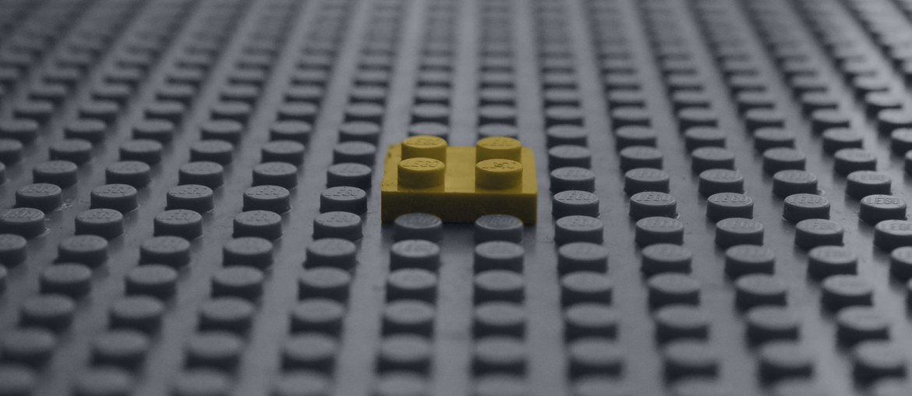

Manufacturing Execution System
Five teams support a complex MES and integrations.
C#, Angular, SQL, and Oracle stack.
Read case studyFor SCALES Group A/S
SCALES already guides many Danish firms through cloud ERP. The next strain is keeping support, updates, and client changes moving at the same high level.
Saw the Service Delivery Manager signal. It points to rising support load around D365FO, SLAs, One Version updates, and customer change requests.
The Service Delivery Manager hire says delivery is moving from project go-lives into long service life. SCALES supports many D365FO installs, and your site names SLA, One Version, virtual support teams, and product and infrastructure work. That mix can strain the same senior people who protect project quality. If triage, update testing, and integrations stay too manual, response times slip and delivery leaders carry too many escalations.
Elinext supplies a small squad that works under SCALES delivery leadership. Your team keeps scope, customer contact, and D365FO decisions.
Review SLA intake, update work, and client changes, then mark tasks that can move from senior experts to the squad.
Create reusable test packs for One Version updates, key integrations, and data-heavy D365FO workflows before client release windows.
Take selected integration fixes, monitoring points, and small enhancements through weekly demos with your service delivery lead.
Write runbooks, release notes, and evidence packs so SCALES teams can reuse the same support pattern later.
Elinext is a full-cycle software development company since 1997. We have about 700 in-house specialists and no freelancers. We build dedicated teams for web, backend, QA, DevOps, AI, and enterprise systems. We are backed by ISO 9001 and ISO 27001, which matters when teams touch ERP data and support flows. This fits support work where trust and clear handover matter. For SCALES, this means extra delivery capacity can follow your method while Elinext handles build, test, and release discipline.
Five teams support a complex MES and integrations.
C#, Angular, SQL, and Oracle stack.
Read case study
Built reusable tools for a Microsoft services firm.
Azure, React, TypeScript, Java, MongoDB, Kubernetes.
Read case study